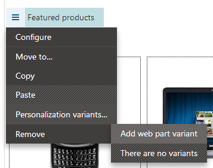
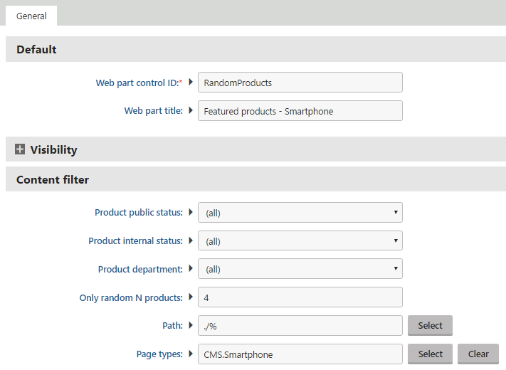
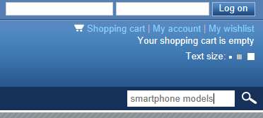
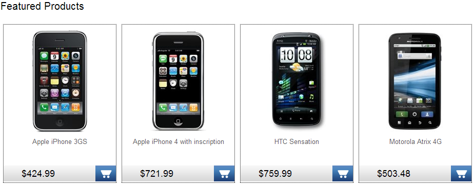

Creating a personalized page - example
The example on this page describes how to create an advanced personalized page step-by-step. The personalization scenario leverages Contact management features in order to display different content for each visitor according to the actions they previously performed on the website. Specifically, the example demonstrates how to modify the default Products page on the sample Corporate site so that it displays a targeted list of products based on the keywords that visitors enter into the website's search.
Creating the first product list variant
The following example uses the sample Corporate site.
Open the Pages application and select the Products page in the page tree.
Switch to the Design tab, where you can see the zones and web parts that make up the content of the page.
Right-click the header of the Featured products web part located in the Main zone.
Hover over the Personalization variants option and click Add web part variant.

Adding a web part variant to the pageEnter the following values for the variant's properties:
Display name: Featured products - Smartphones
Enabled: Selected (leave it checked)
Display condition:
OnlineMarketingContext.CurrentContact.LastActivityOfType("internalsearch").ActivityTitle.ToLower().Contains("phone")Macro details
This condition ensures that the page displays the variant only if the latest keyword searched by the current user contains the word phone, such as smartphone, iPhone etc. The condition is composed of several macro methods and expressions:
The LastActivityOfType method retrieves the current contact's most recently logged Activity of the Internal search type.
The ActivityTitle property loads the title of the logged activity, which stores the exact text of the search phrase.
The ToLower method converts the title to lower case (to make sure that the condition correctly recognizes search keywords with capital letters).
The Contains method checks if the second parameter (i.e. the word phone) is located somewhere within the text returns the result.
Click Save & Close.
The configuration dialog for the variant's web part properties appears.
The variant automatically loads the property values from the original web part.
Change the following properties:
Default -> Web part title: Featured products - Smartphones (allows you to identify which variant you are working with on the Design tab)
Content filter -> Product public status: (all)
Content filter -> Page types: CMS.Smartphone (ensures that the web part only loads and displays smartphone products)

Configuring personalization variant
Click Save & Close.
Kentico EMS required
Features described on this page require the Kentico EMS license.
Creating the second product list variant
Add another variant to the Featured products web part by clicking Add content personalization variant (
 ) next to the slider.
) next to the slider.Set the following properties for the variant:
Display name: Featured products - MS Windows
Enabled: Selected (leave it checked)
Display condition:
searchText=OnlineMarketingContext.CurrentContact.LastActivityOfType("internalsearch").ActivityTitle.ToLower(); searchText.Contains("windows") OR searchText.Contains("microsoft") OR searchText.Contains("office")Macro details
The macro loads the latest search keyword once (just like the first variant) and stores the value in the searchText variable. This avoids repeated loading of the activity data and improves performance.
The condition checks the variable for three different words and is fulfilled if the system finds at least one of the keywords in the search text.
Click Save & Close to confirm the variant's properties.
Make the following changes to the web part's properties:
Default -> Web part title: Featured products - MS Windows
Content filter -> Product public status: (all)
Content filter -> WHERE condition: SKUManufacturerID = 6 (the web part variant only loads products that have Microsoft Corporation set as their manufacturer)
Click Save & Close again to create the second variant.
There are now three different versions of the product list on the page.
Result
To try out how the personalization works:
View the live site and sign out.
Enter phone or any other text containing the word into the search bar on any of the website's pages (it is located in the header under the navigation menu).

searching for phones on the websiteSelect the Products page from the menu.

Smartphones displayed by a personalization variant
The page only displays smartphone products in the Featured products section.
You can test other possible search expressions and check how the content of the page changes. If the searched text does not match the conditions of either one of the created variants, the page shows the default list containing a random selection of featured products. If you log on to the site as a different registered user (e.g., user name Andy with a blank password), this changes the current contact and the system displays the default version of the page until you search for an expression that matches one of the personalization variant conditions.
The result of the example is a personalized page that dynamically offers products that the visitor has shown interest in (by searching for related terms), rather than a random selection of products from the entire catalog. When setting up this type of personalization on your own website, you can create any number of variants with appropriate conditions according to your specific requirements and product catalog.